操作系统 Lesson 2 [lesson-2][edit]
操作系统 Lesson 2 [lesson-2][edit]
操作系统的四个特征: 并发 共享 虚拟 异步
OS的并发性 [Concurrence]
同一 时间间隔 内执行和调度 多个程序 的能力
- 宏观上, 处理机同时执行多道程序
- 微观上, 处理机在多道程序间高速切换 (分时交替执行)
- 关注单个处理机同一时间段内处理任务数量的能力
单核与多核
- 单核 CPU 同一时刻只能运行一个程序, 并发执行程序.
- 多核 CPU 同一时刻可以执行多个程序, 并行执行程序.
OS 的共享性 [Sharing]
即资源共享, 系统中的资源供多个 并发执行 的应用程序共同使用
- 同时访问方式: 同一时段允许多个程序同时访问共享资源
- 互斥共享方式: 也叫独占式, 允许多个程序在同一个共享资源上独立而互不干扰的工作
并发和共享互为存在条件
- 共享性要求 OS 中同时运行着多道程序. 若只有单道程序正在运行, 则不存在共享的可能
- 并发性难以避免的导致多道程序同时访问同一个资源. 若多道程序无法共享部分资源 (比如磁盘), 则无法并发
OS 的虚拟技术 [Virtual]
- 时分复用技术 [TDM, Time Division Multiplexing] e.g. 单核多线程
- 空分复用技术 [SDM, Space Division Multiplexing] e.g. 磁盘分卷
OS的异步性 [Asynchronism]
多道程序环境下, 允许多个程序并发执行; 单处理机环境下, 多个程序分时交替执行;
- 程序执行的不可预知性
- 获得运行的时机
- 因何暂停
- 每道程序需要多少时间
- 不同程序的性能, 比如计算 / IO
- 宏观上 “一气呵成”, 微观上 “走走停停”
多道程序的两种执行方式
- 顺序执行: 顺序性, 封闭性, 确定性, 可再现性
- 并发执行: 间断性, 资源共享性 (失去封闭性, 相互制约), 不可再现
这些问题引出了进程的概念.
进程 [Process] 是一个具有一定独立功能的程序关于某个数据集合的一次运行活动, 是系统进行 资源分配和调度上 的一个独立单位.
- 进程是程序的 一次执行
- 进程是一个程序及其数据在处理机上顺序执行时所发生的
- 进程是程序在一个 数据集合 上运行的过程
- 进程是系统进行 资源分配和调度 的一个 独立 单位 (或者说基本单位).
进程与程序的区别
- 进程是动态的, 程序是静态的 (动态性)
- 进程有并发的特征, 程序没有 (并发性)
- 进程有生命周期, 程序是长久的 (独立性, 异步性)
- 进程可创建其他进程, 程序不能 (结构性, 配备进程控制块 PCB)
进程的基本状态
由于多个进程在并发执行时共享系统资源, 致使它们在运行过程中呈现间断性的运行规律, 所以进程在其生命周期内可能具有多种状态. 一般而言, 每一个进程 至少 应处于以下三种基本状态之一:
三态模型
就绪 [Ready] 状态. 进程已处于准备好运行的状态, 即进程已分配到除 CPU 以外的所有必要资源后, 只要再获得 CPU, 便可立即执行.
如果系统中有许多处于就绪状态的进程, 通常将它们按一定的策略 (如优先级策略) 排成一个队列, 称该队列为就绪队列. 执行 [Running] 状态. 进程已获得 CPU, 其程序正在执行的状态. 对任何一个时刻而言, 在单处理机系统中, 只有一个进程处于执行状态, 而在多处理机系统中, 则有多个进程处于执行状态.
阻塞 [Blocked] 状态. 这是指正在执行的进程由于发生某事件 (如 IO 请求、申请缓冲区失败等) 和暂时无法继续执行时的状态, 亦即进程的执行受到阻塞. 此时引起进程调度, OS把处理机分配给另一个就绪进程, 而让受阻进程处于暂停状态, 一般将这种暂停状态称为阻塞状态, 有时也称为等待状态或封锁状态.
通常系统将处于阻塞状态的进程也排成一个队列, 称该队列为阻塞队列. 实际上, 在较大的系统中, 为了减少队列操作的开销, 提高系统效率, 根据阻塞原因的不同, 会设置多个阻塞队列. 创建状态 [New], 又称新建态. 进程正在被创建, 操作系统为进程分配资源、初始化 PCB.
终止状态 [Terminated], 又称结束态. 通过执行
exit系统调用, 请求操作系统终止该进程. 进程正在从系统中撤销, 操作系统会回收进程拥有的资源、撤销 PCB.

五态模型